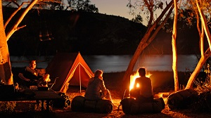
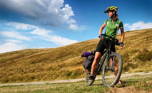
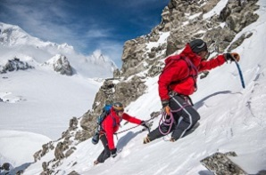
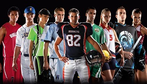
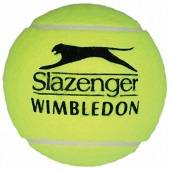
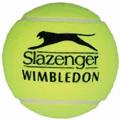
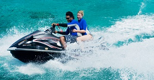

CATEGORIES OF ITEMS
On this page you will find an information of the different types of products our store is offering. However, for the full list of goods, please, navigate to the order tab.
CATEGORIES OF ITEMS
On this page you will find an information of the different types of products our store is offering. However, for the full list of goods, please, navigate to the order tab.
CAMPING AND HIKING

If you lead an active lifestyle and prefer to spend your free time in hiking trips, then you should know that for the most comfortable stay, the camping equipment must possess qualities such as reliability, portability, multivariate usage and ease of use. Therefore, the convenience and security of tourists largely depends on the quality of the equipment. As is known, that if the travel gear is matched correctly, you will feel at height in a variety of situations. With the excellent equipment, every new campaign will be an unforgettable adventure. Conquering a summit is much easier when you have a comfortable backpack on your shoulders, and the spirit becomes twice as strong just from the thought that in the evening you will enjoy a warm sleeping bag and standing in a reliable tent with a cup of tea prepared in the quiet dinning burner.
OUTDOOR SPIRIT™ offers the following items from the camping / hiking category:
... and more!
CYCLING AND BIKING

OUTDOOR SPIRIT™ offers a great variety of road, highway, and mountain, models from the world's leading manufacturers, supplemented by a large assortment of accessories. We specialize not only in selling and providing a rent of the most popular brands of bicycles and motorbikes, but also perform warranty service. We are offering over 10 000 items, including spare parts (handlebars, wheels, pedals, rims, frames, etc..) and accessories (various protection, cycling wear components, shoes and much more). Here you can buy and rent an affordable bike, based on the purpose of use, your taste, preferences and anthropometric characteristics - in any our store there are always available around 2000 bikes from different manufacturers.
OUTDOOR SPIRIT™ offers the following items from the cycling / biking category:
... and more!
ROCK CLIMBING

Sports experience and team spirit of our employees made the company one of the best in its class. Our product range varies from light clothing in the style of a high-rise to outdoor climbing equipment. We offer products from leading manufacturers in these areas, proven with years of experience.We traditionally sell something from which life depends on many categories of people involved in extreme sports in the mountains. This special climbing equipment: hooks, carabiners, jumpers, rollers, ice axes and more, simply called - "iron". This department is improving throughout our history, and we are proud of the representation of the goods. You can get equiped here with a safety and assault gear for ice and rock routes, climbing and mountain trekking. Reliability - that's the quality that we have declared for the main equipment of this department.
OUTDOOR SPIRIT™ offers the following items from the rock climbing category:
... and more!
TEAM SPORTS

You know what it means to be a part of a team. It’s leaning on one another, pulling together when it counts. It’s rallying when you’re down, relishing the moments you’re up – and working just as hard either way.Turn to the OUTDOOR SPIRIT™ for the team sports gear you need to make this season your finest. Discover equipment crafted for the gridiron and sports apparel that helps you break boundaries on the diamond. The stuff it takes to dominate the court or gain agility on ice. Browse by sport with collections designed for baseball and softball, football, soccer, basketball, hockey, lacrosse and tennis. No matter your sport, outfit for performance. Your game starts from the ground up: Shop the House of Cleats, and find the right fit and feel for your individual sport footwear.Rise to the occasion with the right sports gear. Pick up everything from padding and protection, jerseys, game balls, racquets and sticks. Whether it’s sports medicine or training aids, stock up on what you need to be ready for anything.Coaches find the resources they need in the coaches corner and fans feel the game from the stands with gear from the fan shop. From wrestling, to gymnastics and track and field, experience the difference exceptional team sports gear makes. Shop apparel and gear for men, women and youth athletes alike.For a personalized touch on your season, find more information on custom equipment and team sports deals at OUTDOOR SPIRIT™. Get the quality you need from to brands you love!
OUTDOOR SPIRIT™ offers the following items from the team sports category:
 

... and more!
WATER SPORTS

Find the gear you need to take on the water like never before. Catch the wake on a durable towable tube. Fly over water on a performance-ready wakeboard. Keep safe in a life vest designed for a lightweight feel. You’ll get an up-close view of the underwater world with goggle masks that give you brilliant vision beneath the surface. Breathe easy with innovative snorkels and snorkeling sets that let you focus on blue waters ahead. Quick-drying wetsuits deliver a second-skin fit that flexes with you as you ride a wave. Propel yourself forward with fins that fit comfortably and boost your leg strength. Make a splash with water trampolines and ensure your day on the lake is anything but ordinary. Find towable tubes from Airhead®. Pull on a life jacket from O’Brien®. Turn to top brands Rave Sports®, Cressi®, Quicksilver® and many more. Dive in, float on, ride surf. Discover water sports gear that keeps pace with you.
OUTDOOR SPIRIT™ offers the following items from the water sports category:
... and more!